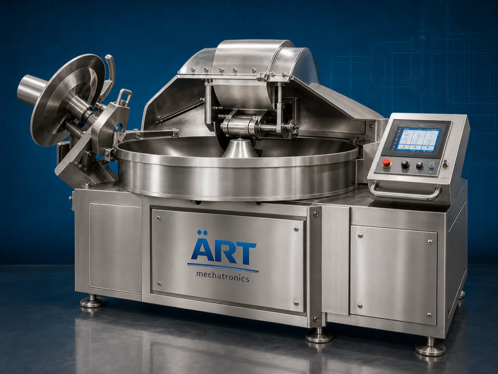

Industrial Knives Cutter Machine (Heavy Duty Knife Cutting System)
An Industrial Knives Cutter Machine, also known as an Industrial Knife Cutting Machine, Heavy Duty Knife Cutter, Rotary Knife Cutter, or Industrial Blade & Knife Cutting System, is an advanced industrial processing solution designed for precision cutting, slicing, trimming, slitting, strip…

About the Knife Cutter
Industrial knives cutter systems are widely used for: ✔ Web and roll cutting ✔ Food slicing operations ✔ Plastic and rubber cutting ✔ Paper and board trimming ✔ Textile and foam cutting ✔ Flexible packaging slitting ✔ Industrial material processing ✔ Continuous production line cutting
The machine improves: ✔ Cutting precision ✔ Production efficiency ✔ Product consistency ✔ Material utilization ✔ Processing speed ✔ Industrial safety ✔ Automation performance
Industrial knives cutter machines use: ✔ Heavy-duty industrial knife systems ✔ Servo synchronized cutting mechanisms ✔ PLC and HMI automation controls ✔ Precision feeding systems ✔ Conveyor synchronized material handling
to automatically cut and process materials with superior accuracy and high production efficiency.
Industrial knives cutter machines are widely used in industries such as:
Food processing industries Packaging industries Plastic industries Rubber industries Paper industries Wood industries Textile industries Foam processing industries
where precision cutting, continuous processing, and high-speed production are essential.
The machine is highly suitable for: ✔ Flexible packaging cutting ✔ Food slicing and trimming ✔ Roll and web slitting ✔ Foam and textile cutting ✔ Industrial material processing ✔ Automated production line cutting
ART Mechatronics offers high-performance industrial knives cutter machines, engineered for continuous industrial operation, precision knife cutting performance, smooth material handling, and reliable long-term industrial processing.
Working Principle of Industrial Knives Cutter Machine
- 1. Material Feeding & Conveyor Handling Materials are automatically transferred through synchronized feeding systems for cutting operation.
- 2. Material Positioning & Alignment Process Machine automatically aligns and positions materials before knife cutting operation.
Servo synchronization ensures smooth material flow and accurate cutting operations.
- 3. Knife Cutting Operation Machine handles cutting of: ✔ Food products ✔ Plastic sheets ✔ Rubber materials ✔ Paper rolls ✔ Foam sheets ✔ Textile materials ✔ Laminates ✔ Industrial web materials
accurately and continuously.
- 4. Precision Knife Cutting & Slitting Process Machine performs: Web slitting Sheet cutting Strip cutting Roll trimming Edge cutting Continuous slicing Material size reduction
for efficient industrial material processing operations.
- 5. Intelligent Automation & Safety Integration Optional systems include: Automatic knife positioning Vision alignment systems Safety guarding systems Dust extraction systems Material tracking systems
- 6. Finished Product Discharge Processed materials discharged automatically for: Packaging operations Further processing Warehouse storage Export shipment handling
Types of Industrial Knives Cutter Machines
- 1. Rotary Knife Cutter Machine Designed for: ✔ Continuous high-speed cutting applications
- 2. Circular Knife Slitting Machine Suitable for: ✔ Web and roll slitting operations
- 3. Food Knife Cutter Machine Uses: ✔ Food processing and slicing systems
- 4. Foam & Textile Knife Cutting Machine Designed for: ✔ Foam sheet and textile processing operations
- 5. Servo Driven Knife Cutter Machine Suitable for: ✔ Precision industrial cutting operations
- 6. Fully Automatic Knife Cutting System Designed for: ✔ Complete industrial processing automation lines
Industries Using Industrial Knives Cutter Machines
🍅 Food Processing Industry Bakery products, frozen foods, snacks, spices, and food slicing systems. 📦 Packaging Industry Flexible packaging films, laminates, labels, and industrial slitting systems. ⚙️ Plastic & Rubber Industry Plastic sheets, rubber materials, and industrial trimming operations. 📄 Paper Industry Paper rolls, labels, boards, and industrial converting systems. 🧵 Textile & Foam Industry Foam sheets, fabric rolls, and industrial cutting operations. 🛒 FMCG Industry Retail packaging materials and industrial processing systems.
Features & Advantages
✔ High-speed automatic knife cutting operation ✔ Accurate and uniform material cutting systems ✔ Heavy-duty industrial knife technology ✔ PLC and servo automation control systems ✔ Improves production efficiency and material utilization ✔ Reduces manual cutting dependency ✔ Supports multiple material formats and thicknesses ✔ Reliable long-term industrial performance ✔ Smooth integration with production automation lines
Technical Highlights
Machine Type: Industrial knives cutter machine Heavy-duty knife cutting system Industrial material cutting machine Material Compatibility: Food products Plastic sheets Paper rolls Rubber materials Foam sheets Textiles Industrial web materials Integration: Servo cutting systems Conveyor synchronization systems Automatic feeding systems Knife positioning systems Features: PLC control system Touchscreen HMI Heavy-duty industrial knives Safety guarding systems Precision alignment systems Applications: Food slicing Packaging material cutting Industrial slitting Roll trimming Web processing Material size reduction Automation: Semi-automatic Fully automatic industrial systems
Turnkey Industrial Knife Cutting Solutions
ART Mechatronics offers: Complete industrial knife cutting systems Automatic material processing solutions Industrial cutting automation systems Conveyor synchronization systems Installation & commissioning After-sales service & AMC
Why Choose Art Mechatronics
Expertise in industrial processing and automation systems Customized cutting solutions for multiple industries High-performance and precision knife cutting technology Advanced PLC and servo automation systems Proven industrial processing performance across sectors
Applications
Food Processing Plants Packaging Manufacturing Facilities Plastic & Rubber Industries Paper Converting Units Foam & Textile Processing Plants Industrial Manufacturing Industries
Related Process Equipment machines
Get pricing & specs for the Knife Cutter
Share the product, target capacity, current process and plant location. These details help our engineers discuss the right machine or line configuration.
One partner, from design to start-up
ART Mechatronics designs, manufactures, installs and commissions your Knife Cutter solution with regional presence in India, UAE and Thailand.